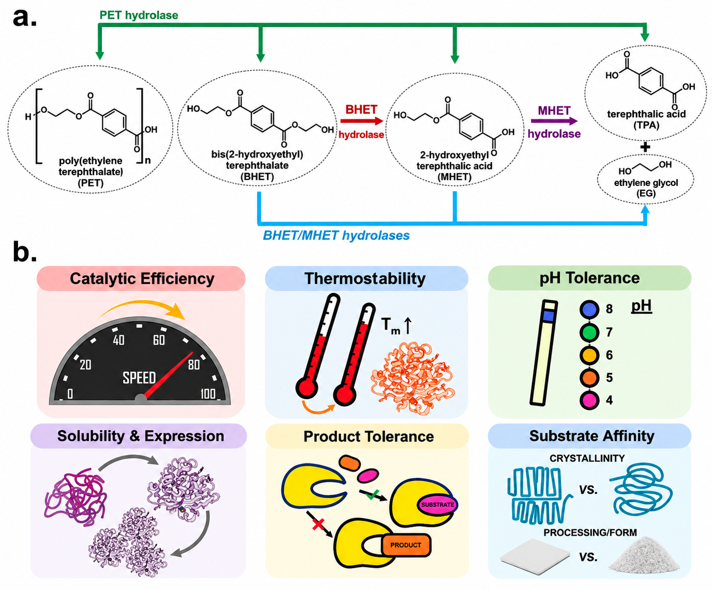

Why PET Remains a Difficult Substrate
Many of the products which we commonly use nowadays, including bottles, packing materials, textiles and various other products, have poly (ethylene terephthalate) or PET incorporated in them. In particular, PET has become one of the most common synthetic polymers due to its mechanical strength, transparency, resistance to chemicals, and cost-effective production.
Disposal apart, the properties which make PET useful also make PET hard to get rid of. PET waste can still be recycled through traditional means, although repeated processing may reduce material quality. Recycling becomes tough when the material is contaminated, heterogeneous, or highly crystalline.
PET enzymatic depolymerization differs from conventional methods because PET hydrolases cleave the ester linkages between the units, instead of just reshaping the polymer. The result will be soluble intermediates as well as, eventually, monomers such as terephthalic acid (TPA) and ethylene glycol (EG). It is possible that these molecular monomers will be reused in the cycle of materials.
However, catalytic reaction is not the only thing that defines PET hydrolysis. As for the polymer, several factors define whether the available for hydrolysis ester bond will be accessed by the enzyme: surface morphology, crystallinity, chain mobility and availability of the substrate. Even a highly efficient catalytic center cannot cleave an ester bond that the polymer cannot present in an accessible configuration.

From PETase Discovery to PETase Engineering
The finding of PET-digesting enzymes made this not only a biological question but an engineering challenge as well.
Biological enzymes capable of breaking down PET provided the necessary platform for protein engineers to build upon. The biological question regarding whether this polymer could be degraded biologically was now a matter of how much this could be enhanced by engineering means. Various approaches have led to significant advancements.
DuraPETase was developed by using computational redesign, achieving major improvements in thermal stability and PET degradation. FAST-PETase was developed through machine-learning assisted engineering and showed robust hydrolysis across a wide range of conditions and substrates. HotPETase was developed by directed evolution, where its melting temperature is 82.5 °C and it still shows activity close to the glass transition region of PET. More recently, computational engineering has produced highly active PET hydrolases capable of nearly complete depolymerization of pretreated post-consumer PET at industrially relevant solids loadings.
These results do not point to one molecular feature that is responsible for making a PET hydrolase better than others in every condition. The restriction might be due to the enzyme’s stability, its ability to bind substrates, conformational dynamics, geometry of the active site, or electrostatic environment depending upon the condition. Residues distant from the catalytic triad could influence catalysis through the change in the conformational landscape available to the enzyme. With the development of predictive modeling tools, the success of PETase engineering poses a new challenge regarding the understanding of PETases’ mechanism.
From Sequence Search to Catalytic-State Design
Earlier computational searches often started with a relatively static protein structure. The researchers used an experimental structure or a homology model, introduced mutations, minimized the models, and docked a substrate. They then scored selected configurations and used the results to choose a small set of variants for testing. This approach is still useful for a known protein scaffold. As computational protein engineering has developed, researchers have gained more ways to search for enzymes.
The methods used in artificial intelligence expand the search space by incorporating information from multiple proteins. The protein language models learn from large corpora of natural sequences and find features that are suitable for the formation of functional proteins. Generative models may even come up with new sequences and structural scaffolds.
Recent studies also consider the chemistry that a designed enzyme must support. Work on designed serine hydrolases showed that new scaffolds can hold catalytic machinery when active-site organization is assessed across several states of the catalytic cycle. RFdiffusion2 has built scaffolds around catalytic geometries derived from quantum chemistry. Catalytic motif scaffolding, including Riff-Diff, shows why the bound state also needs attention. Even with an accurate apo active site, an enzyme is not guaranteed to be active. The substrate must occupy a suitable position and make the interactions required for catalysis.
In addition, we ask about the catalytic state that the sequence is supposed to stabilize. Hence, we have to be informed about how frequently the enzyme is able to attain the particular state and what chemical reaction could occur afterwards. For this purpose, we analyze the states supported by the engineered protein, as well as its sequence and structure.
References
- Thompson, R.C.; Courtene-Jones, W.; Boucher, J.; Pahl, S.; Raubenheimer, K.; Koelmans, A.A. Twenty years of microplastics pollution research—what have we learned? Science 2024, 386, eadl2746. https://doi.org/10.1126/science.adl2746
- Tournier, V.; Duquesne, S.; Guillamot, F.; Cramail, H.; Taton, D.; Marty, A.; André, I. Enzymes’ power for plastics degradation. Chem. Rev. 2023, 123, 5612–5701. https://doi.org/10.1021/acs.chemrev.2c00644
- Oda, K.; Wlodawer, A. Development of enzyme-based approaches for recycling PET on an industrial scale. Biochemistry 2024, 63, 369–401. https://doi.org/10.1021/acs.biochem.3c00554
- Lu, H.; Diaz, D.J.; Czarnecki, N.J.; Zhu, C.; Kim, W.; Shroff, R.; Acosta, D.J.; Alexander, B.R.; Cole, H.O.; Zhang, Y.; et al. Machine learning-aided engineering of hydrolases for PET depolymerization. Nature 2022, 604, 662–667. https://doi.org/10.1038/s41586-022-04599-z
- Bell, E.L.; Smithson, R.; Kilbride, S.; Foster, J.; Hardy, F.J.; Ramachandran, S.; Tedstone, A.A.; Haigh, S.J.; Garforth, A.A.; Day, P.J.R.; et al. Directed evolution of an efficient and thermostable PET depolymerase. Nat. Catal. 2022, 5, 673–681. https://doi.org/10.1038/s41929-022-00821-3
- Shi, L.; Liu, P.; Tan, Z.; Zhao, W.; Gao, J.; Gu, Q.; Ma, H.; Liu, H.; Zhu, L. Complete depolymerization of PET wastes by an evolved PET hydrolase from directed evolution. Angew. Chem. Int. Ed. 2023, 62, e202218390. https://doi.org/10.1002/anie.202218390
- Møller, M.S.; Bleckert, A.; Jäckering, A.; Strodel, B. Unraveling the relationship between PET surfaces and their hydrolases. Trends Biochem. Sci. 2025, 50, 707–720. https://doi.org/10.1016/j.tibs.2025.05.002
- Jäckering, A.; Göttsch, F.; Schäffler, M.; Doerr, M.; Bornscheuer, U.; Wei, R.; Strodel, B. From bulk to binding: Decoding the entry of PET into hydrolase binding pockets. JACS Au 2024, 4, 4000–4012. https://doi.org/10.1021/jacsau.4c00718
- Wei, R.; von Haugwitz, G.; Pfaff, L.; Mican, J.; Badenhorst, C.P.S.; Liu, W.; Weber, G.; Austin, H.P.; Bednar, D.; Damborsky, J.; et al. Mechanism-based design of efficient PET hydrolases. ACS Catal. 2022, 12, 3382–3396. https://doi.org/10.1021/acscatal.1c05856
- Groseclose, T.M.; Nguyen, H.B. Recent advances in enzyme engineering for improved deconstruction of poly(ethylene terephthalate) (PET) plastics. Commun. Mater. 2025, 6, 190. https://doi.org/10.1038/s43246-025-00919-8
- Chen, S.; Akram, E.; Liang, H.; Qiao, W.; Zhang, Y.; Haider, S.; Cao, Y. Insight into how PETase functions at the solid–liquid interface and an activity–stability trade-off. Angew. Chem. Int. Ed. 2025, 64, e202511131. https://doi.org/10.1002/anie.202511131
- Cui, Y.; Chen, Y.; Liu, X.; et al. Computational redesign of a PETase for plastic biodegradation under ambient condition by the GRAPE strategy. ACS Catal. 2021, 11, 1340-1350. https://doi.org/10.1021/acscatal.0c05126
- Cui, Y.; Chen, Y.; Sun, J.; et al. Computational redesign of a hydrolase for nearly complete PET depolymerization at industrially relevant high-solids loading. Nat. Commun. 2024, 15, 1417. https://doi.org/10.1038/s41467-024-45662-9
- Madani, A.; Krause, B.; Greene, E.R.; et al. Large language models generate functional protein sequences across diverse families. Nat. Biotechnol. 2023, 41, 1099-1106. https://doi.org/10.1038/s41587-022-01618-2
- Lauko, A.; Pellock, S.J.; Sumida, K.H.; et al. Computational design of serine hydrolases. Science 2025, 388, eadu2454. https://doi.org/10.1126/science.adu2454
- Kim, D.; Woodbury, S.M.; Ahern, W.; et al. Computational design of metallohydrolases. Nature 2026, 649, 246-253. https://doi.org/10.1038/s41586-025-09746-w
- Braun, M.; Tripp, A.; Chakatok, M.; et al. Computational enzyme design by catalytic motif scaffolding. Nature 2026, 649, 237-245. https://doi.org/10.1038/s41586-025-09747-9